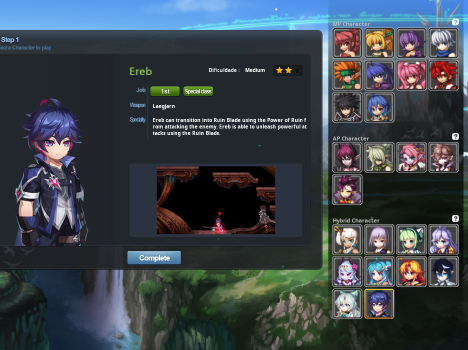
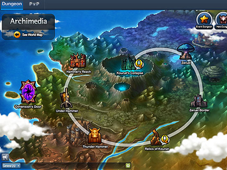
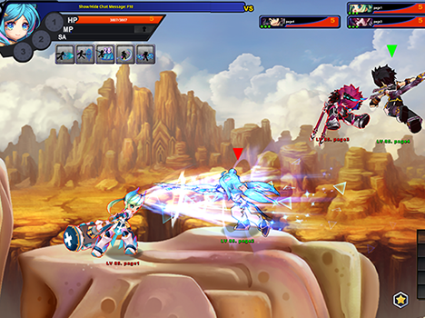

Grand Chase
GrandChase é um RPG de ação online gratuito com rolagem lateral e gráficos inspirados em anime. Desfrute de aventuras emocionantes em masmorras e PvP com personagens únicos.
CARACTERÍSTICAS
-

25 PERSONAGENS ÚNICOS
Amplie as habilidades disponíveis mudando de emprego
e crie sua árvore de habilidades exclusiva para diferenciar
seu personagem dos demais. -

MODO MASMORRA
Junte-se aos seus amigos para explorar as vastas terras. (Modo solo também disponível) Masmorra Normal – Acompanhe as histórias dos personagens e do mundo de Grand Chase. Masmorra Heroica – Conclua cada masmorra para obter os melhores equipamentos disponíveis. Masmorra de Evento – Divirta-se com um tipo diferente de masmorra em comparação com as outras.
-

Modo PvP
Com sua árvore de habilidades exclusiva, dispute partidas estratégicas contra outros jogadores em diversos modos PvP.
Jogue com 2 a 6 jogadores, em partidas com itens, em equipe e individuais, nos modos Normal e Mata-mata.